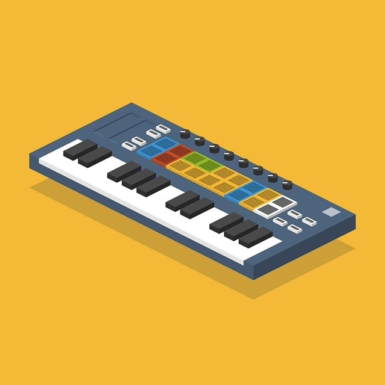
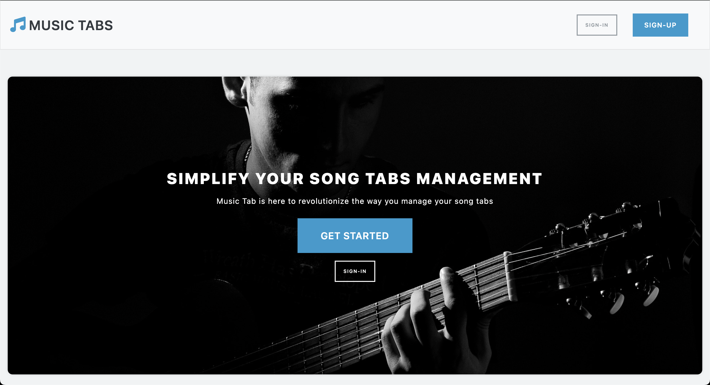
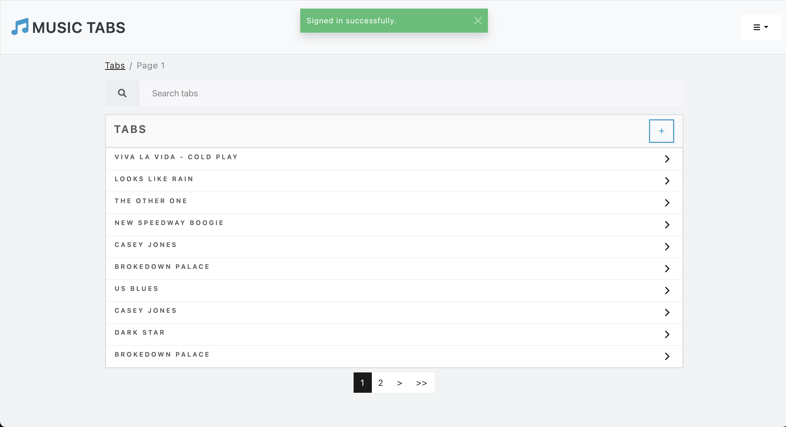
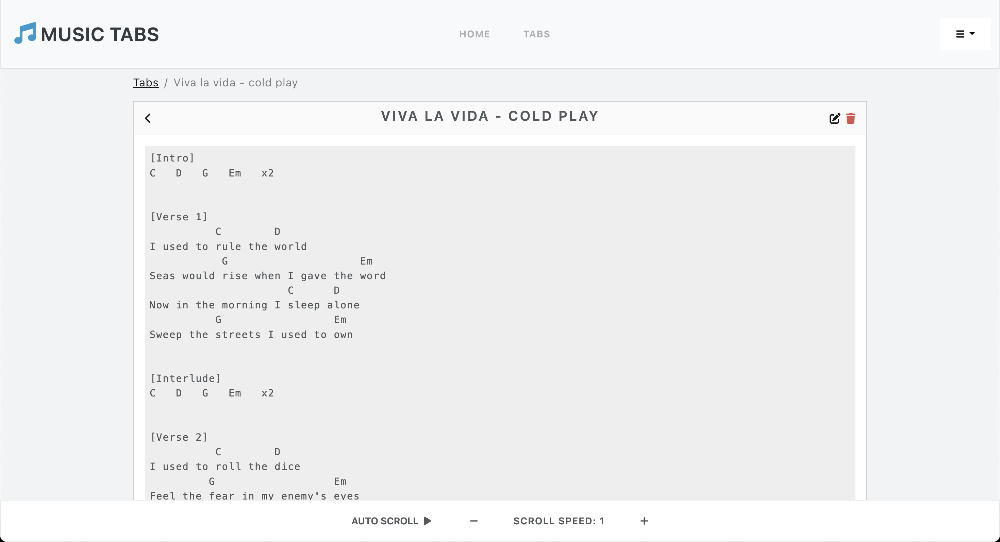

<div class="container-fluid d-flex align-items-center justify-content-center text-center text-light mt-5">
  <div class="card text-white bg-primary" style="width: 64rem;">
    <h3 class="card-header">Music-Tabs</h3>
    
    <div class="card-body">
      <p class="card-text">Music Tabs is a full-stack web application designed to allow users to create, share, and explore guitar tabs. Built with Ruby on Rails for the backend and integrated with JavaScript and AJAX for a dynamic user experience, the application features user authentication via Devise, enabling users to sign up, log in, and manage their accounts securely.</p>
      <br>
      <p>Key features include:</p>
      <ul class="text-start">
        <li>Tab Creation and Editing: Users can create custom guitar tabs with a simple, user-friendly interface. Tabs can be edited and updated as needed, ensuring flexibility in managing music content.</li>
        <li>Tab Search and Viewing: A search functionality allows users to explore a growing library of guitar tabs, filtering by various criteria to find specific songs or pieces.</li>
        <li>Responsive Design: The app is designed to work seamlessly across devices, ensuring that users can create and view tabs on both mobile and desktop.</li>
        <li>AJAX Pagination and Dynamic Navigation: Smooth navigation and page transitions are implemented using AJAX, providing a more seamless user experience without full page reloads.</li>
        <li>Progressive Web App (PWA): Music Tabs is set up as a PWA, allowing users to add the app to their home screen and use it offline.</li>
        <li>Bootstrap Integration: The UI is styled with Bootstrap to ensure a clean, modern, and mobile-friendly design.</li>
      </ul>
      <br>
      <p class="card-text">This project was developed as part of an apprenticeship at the Discovery Partner Institute, where I was responsible for the full development process.</p>
      <br>
      <a href="https://music-tabs.lol" target="_blank" class="btn btn-info">Visit Music-Tabs <i class="fa-solid fa-arrow-up-right-from-square fa-fade"></i></a>
    </div>
    
    
    
    <div class="card-body text-center">
      <p>Technology Stack:</p>
      <ul class="list-group">
        <li>Backend: Ruby on Rails</li>
        <li>Frontend: HTML, JavaScript, CSS</li>
        <li>Database: PostgreSQL, SQLite</li>
        <li>Additional tools: Docker, ESLint, Rubocop</li>
        <li>Version control: GitHub</li>
      </ul>
      <br>
      <a href="https://github.com/borvux/music-tabs" target="_blank" class="btn btn-secondary">View Music-Tabs Source Code <i class="fa-solid fa-arrow-up-right-from-square fa-fade"></i></a>
    </div>
  </div>
</div>
